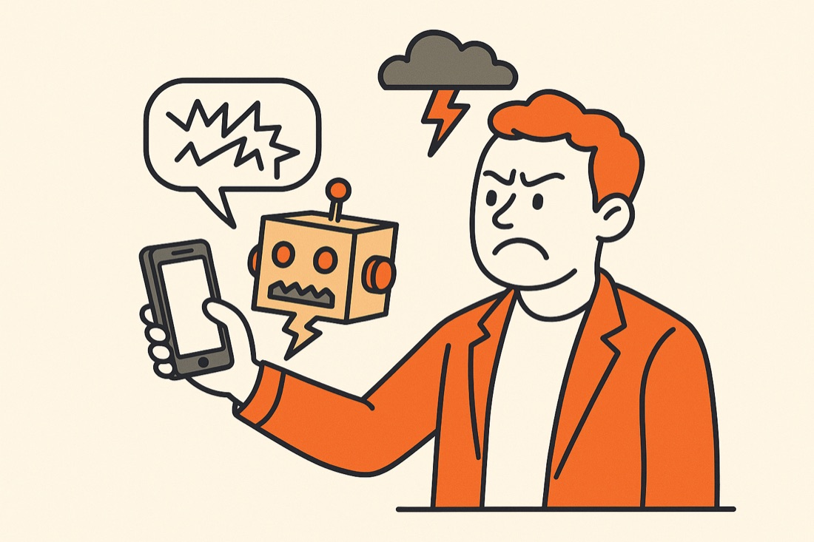
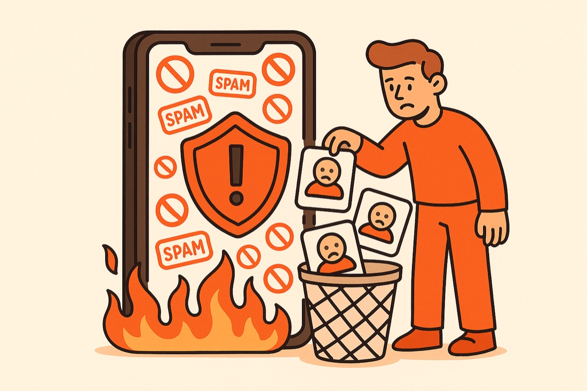
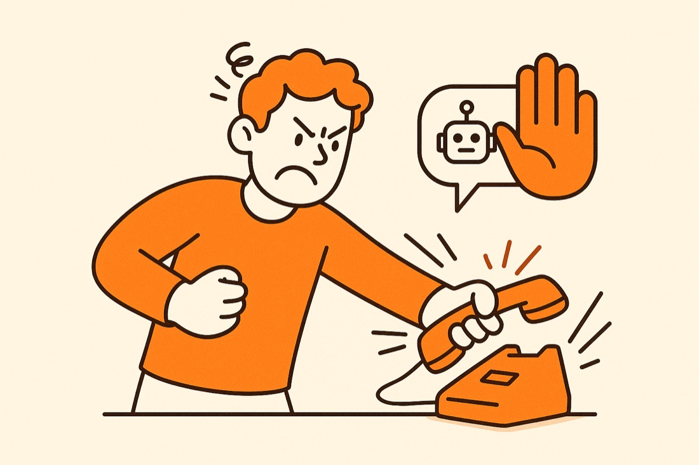

Первичная / холодная база
Первый контакт, 2–4 вопроса, фиксация интереса.
Ограничение: только после проверки базы, согласий и сценария
Voice AI · Контролируемый пилот
Запускаем пилот по одному утверждённому сценарию: бот звонит или отвечает по скрипту, звучит естественно, фиксирует результат и передаёт сложные разговоры человеку.
Сначала проверяем сценарий и показываем демо — потом запускаем обзвон.
Знакомые истории?
Три дословные цитаты из открытых отзывов о сервисах обзвона. Мы собрали их до того, как строить продукт.

«Робот, которого мне сделали, был максимально тупым»
Платформа продала минуты и кабинет — а собирать сценарий, учить бота и чинить ветки диалога оказалось некому.

«Больше половины звонков попадали на блок от операторов»
Массовый обзвон вслепую — и номера в чёрных списках. «Попав в такую базу однажды — выбраться непросто».

«Подмена живого общения роботом сразу была замечена — клиенты массово сообщали о минусах»
Плохой робот раздражает людей и бьёт по репутации бренда — даже если что-то и «дозвонилось».
Проблема не в голосовых ботах — а в запуске вслепую.
Ваш клиент заслуживает нормального разговора, даже когда звонит AI.
Красная линия
Не обещаем «робота вместо отдела продаж». Показываем, какие звонки реально можно отдать AI-боту, где нужен человек и что покажет пилот.
Мы внедряем AI-ассистентов для бизнеса — betaline-ai.ru — и голосовые пилоты запускаем по тому же принципу: сначала проверяем и показываем, потом запускаем.
Демо
Мы не просим поверить в «человеческий голос» на словах. Даём демо, транскрипт и понятные границы сценария.
Бот задаёт 3–5 вопросов, определяет интерес, бюджет и сроки — тёплые разговоры передаёт человеку.
Бот подтверждает визит, переносит время или передаёт оператору, если клиент задаёт сложный вопрос.
Бот аккуратно возвращает старую базу в диалог и не давит, если клиент отказывается.
Демо-запись под ваш сценарий подготовим после короткого брифа
Задачи
У каждой задачи есть честное ограничение — фиксируем его до запуска, а не после.
Первый контакт, 2–4 вопроса, фиксация интереса.
Ограничение: только после проверки базы, согласий и сценария
Напоминает, подтверждает, реактивирует.
Ограничение: нужен понятный повод звонка
Отвечает по утверждённой базе знаний, обращение не теряется.
Ограничение: бот не выдумывает цены и обещания
Подтверждает запись, визит, событие — меньше неявок.
Ограничение: текст должен быть согласован
Забирает однотипные звонки и первичную сортировку.
Ограничение: сложные вопросы передаются человеку
Перезванивает и фиксирует статус — заявки не остывают.
Ограничение: после подтверждения телефонии
Короткие вопросы, быстрый первичный фильтр.
Ограничение: не для сложных интервью
Соберите пилот под себя в квизе — за 30 секунд.
Собрать пилот →Конструктор пилота
Отметьте, что нужно — подготовим разбор и демо-сценарий именно под вашу задачу.
План
От брифа до результатов пилота — без кабинета, в котором нужно разбираться самому.
Цель звонка, источник базы, что считаем результатом. Честно скажем, если бот не подойдёт.
Согласия, стоп-листы, тон, что нельзя обещать. Границы фиксируются до запуска.
Скрипт, ветки диалога, правила передачи менеджеру, голос — и демо-запись вам на прослушивание.
Ограниченный объём, контроль качества, возможность остановить кампанию в любой момент.
Статусы, записи и транскрипты, отчёт по метрикам и рекомендация: масштабировать, доработать или не запускать.


Границы
Чтобы обзвон не сжёг базу и не бесил ваших клиентов — четыре «ворот контроля» до и во время пилота.
Бот говорит только то, что утверждено. Не выдумывает цены, скидки и обещания.
«Не звоните мне» — контакт сразу в стоп-лист. Отказ фиксируется, разговор корректно завершается.
Сложные и эмоциональные разговоры передаются менеджеру. Вы слышите бота раньше ваших клиентов — на тестовых звонках.
Ограниченный объём пилота, записи и транскрипты по согласованной модели. Кампанию можно остановить в любой момент.
Модель раскрытия согласуется под сценарий, базу и требования клиента. Мы не строим коммуникацию на обмане: задача бота — корректно обработать типовой сценарий и передать человеку сложный разговор.
Для рекламных и холодных звонков отдельно проверяются источник базы, согласия и допустимость сценария (152-ФЗ «О персональных данных», 38-ФЗ «О рекламе»). Информация на сайте не является юридической консультацией.
Результат
Не «слушайте записи в кабинете», а готовый статус и задача там, где вы уже работаете.

Готовность интеграций подтверждается перед пилотом.
Пилот
Мы не предлагаем сразу грузить всю базу. Сначала ограниченный сценарий, тест и понятные выводы: масштабировать, доработать — или честно не запускать.
Расчёт пилота — предварительная оценка, не гарантия продаж или окупаемости.
Следующий шаг продукта — кнопка, по которой бот сам позвонит вам для тестового диалога. Сейчас мы показываем демо-запись и готовим тестовый сценарий под вашу задачу.
FAQ
Разбор сценария
Без обещаний «заменим отдел продаж». Посмотрим вашу задачу, ограничения и покажем, с какого пилота разумно начать.
Свяжемся, чтобы разобрать сценарий и показать демо.